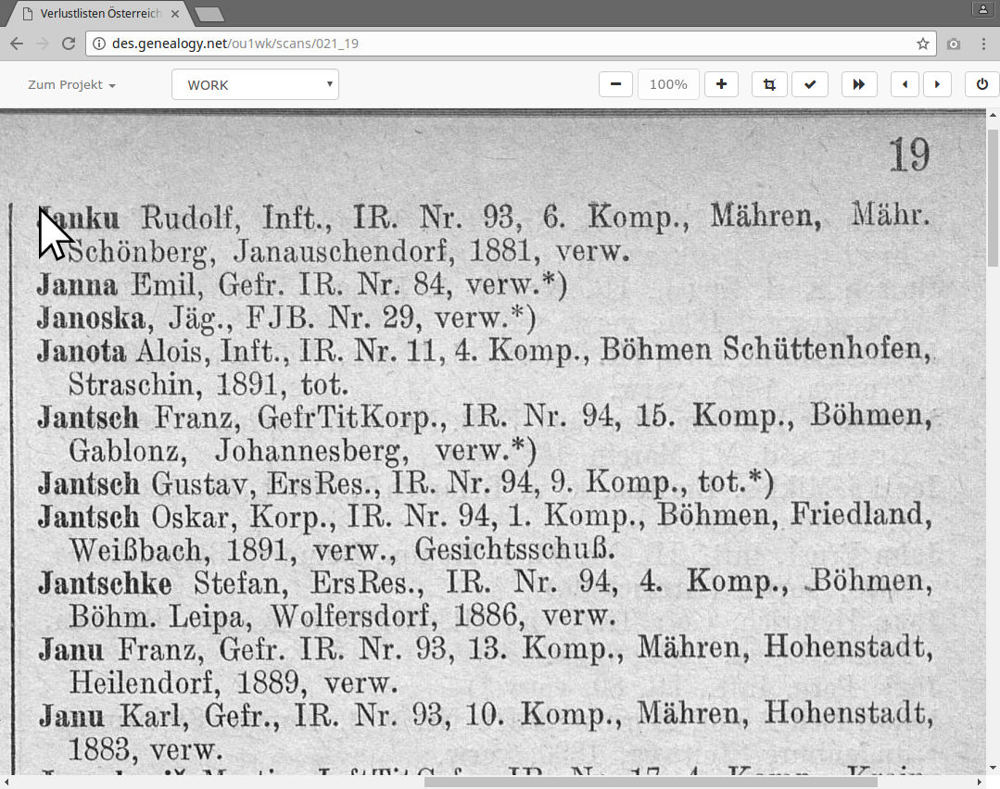
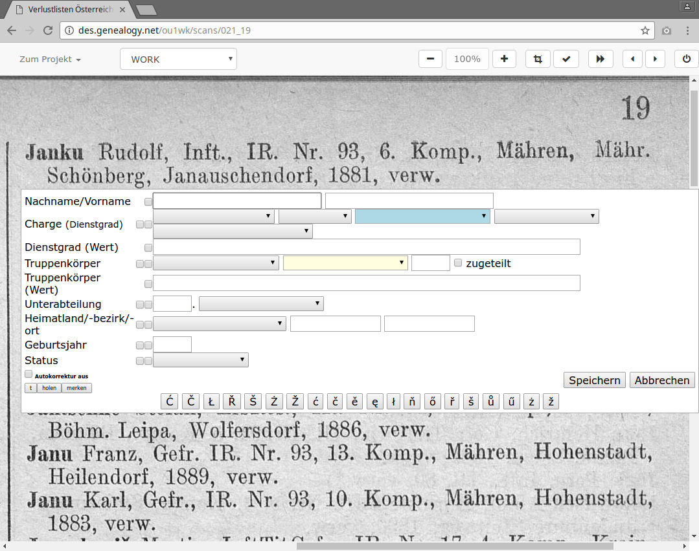
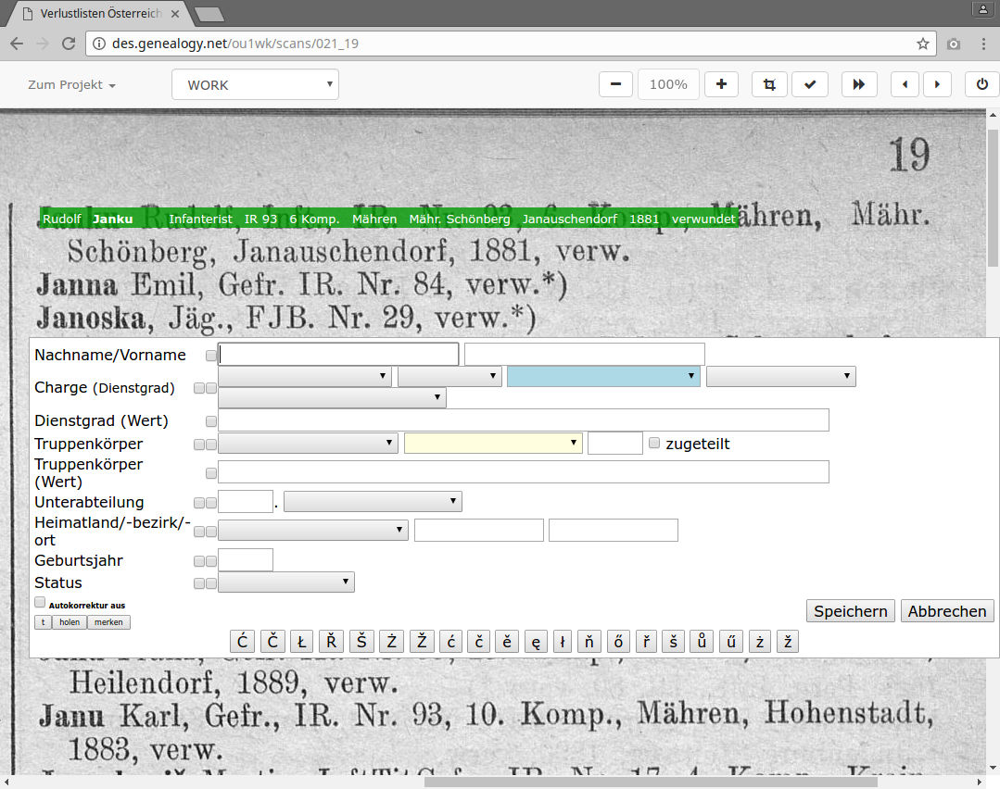
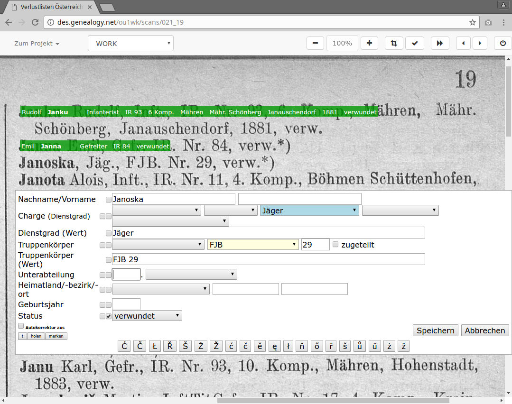
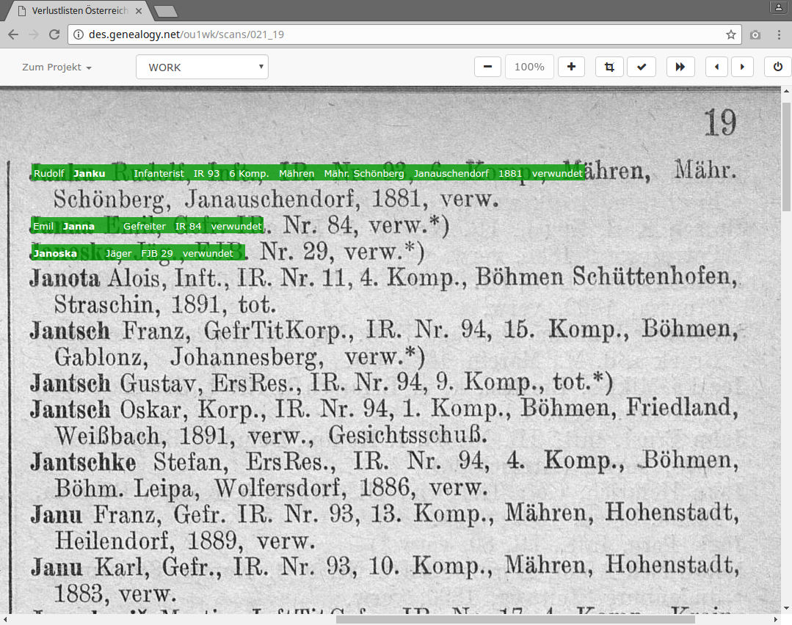

Ausztria-magyarországi veszteséglajstrom
az első három bejegyzés
Jesper Zedlitz (CompGen)
Nachdem Sie
http://des.genealogy.net/wk1ou/start/edit
angesteuert und sich angemeldet haben, wird ein
Bild ähnlich wie dieses erscheinen...

Megjelenik a beszkennelt kép. Vigye az egérmutatót az első bejegyzés bal felső sarkába…

kattintson a bal egérgombbal.

Megjelenik a rögzítőfelület. Ne ijedjen meg, csak elsőre tűnik bonyolultnak. Lépésről lépésre segítünk.

Kezdjük el az adatok bevitelét. Először a vezetéknevet (Nachname).
Nem baj, ha mindent kisbetűvel ír, a program automatikusan javítani fogja a kis és nagy kezdőbetűket.

A következő mezőre a TAB-billentyűvel ugorhat. Írja be a keresztnevet (Vorname). Most következik a rendfokozat (Dienstgrad), ehhez nyomja meg 3x a TAB-billentyűt, így a kék mezőbe érkezik.

Az „Infanterist” (honvéd) fokozat rögzítéséhez nyomja meg az „I” betűt. Az „IR” a hadtestet jelenti. A TAB-billentyű 4x lenyomásával a sárga mezőbe jut.

Itt is elegendő egyszer megnyomnia az „I” betűt. A folyamat ismétlődik, míg minden mezőn végigér. Mentéshez kattintson a „Speichern” gombra, vagy hagyja el a „Status”-t a TAB-bal és üssön Entert.

Gratulálunk, az első bejegyzés rögzítése sikeres volt!
A zöld sáv azt jelzi, hogy a bejegyzést módosították.
Der zweite und dritte Eintrag
Nach diesem Erfolg wollen wir gleich mit dem zweiten und dritten Eintrag weitermachen.
Dabei werden wir auch eine Komfortfunktion und eine Tastenkombination des DES kennenlernen.

Következik a második bejegyzés. Ehhez kattintson az egérrel a bal felső sarokba.

Ismét megjelenik a rögzítőfelület. Mivel a legutóbbi rögzítés kétsoros volt, az ablakunk most lejjebb nyílik meg.

Az előzőekben leírtak szerint kitöltjük a mezőket. A mentés előtt azonban álljunk meg egy kicsit.

Ha a mentés előtt a „Status” mezőben bepipáljuk pl. a „verwundet” (megsebesült) szót, akkor a program – kényelmi funkciójának köszönhetően – azt a következő bejegyzésre nézve is megjegyzi. Következhet a mentés.

Ez már a harmadik bejegyzés rögzítőfelülete. Ahogy ígértük, a „verwundet” (megsebesült) bepipálva maradt.

Kitöltjük a harmadik bejegyzés hiányzó mezőit. A hadtestnél elegendő az „FJ” kiválasztása. A 29-es megadása után az Alt+s gombok lenyomásával vagy a „Speichern”-nel elmenthetjük adatainkat.

Elkészült a harmadik bejegyzés is!
Das war gar nicht so schwer, oder?
Nun viel Spaß bei der weiteren Erfassung.
Bei Fragen helfen die Projektbetreuer gerne weiter. Es gibt auch eine Mailingliste, auf der man Fragen stellen kann: